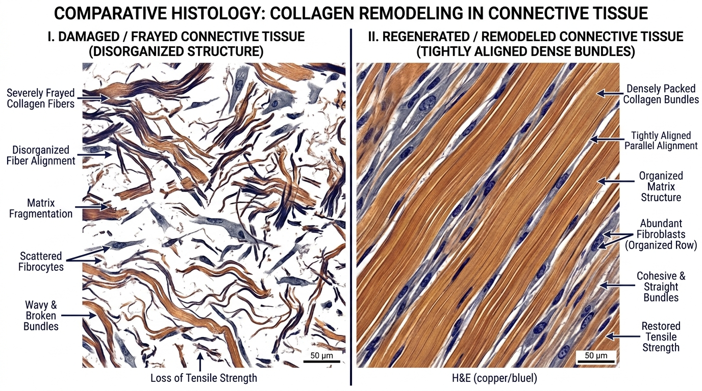

At 49, Mark Reynolds (a commercial building contractor and former collegiate athlete from Denver, Colorado) felt like his body was falling apart from the inside out.
Twenty-five years of heavy lifting, job site strain, and sports injuries had caught up with him with terrifying speed.
Getting out of bed in the morning required a 20-minute ritual of hot showers and stretching just to loosen his stiff knees and lower back. His right shoulder had a chronic labrum tear that made lifting his arm overhead excruciating.
To make matters worse, the chronic physical stress was showing on his face. His skin had thinned, dark circles clung to his eyes, and his energy crashed violently by 1 PM every afternoon.
"I went to three different orthopedic surgeons," Mark explains. "The first recommended a total knee replacement down the road. The second gave me a cortisone shot that wore off in three weeks and left my cartilage even weaker. The third told me to 'just accept that you're getting older and stop lifting.'"
Mark refused to accept a future of limited mobility, painkillers, and progressive decline.
The Core Problem: Extracellular Matrix (ECM) Exhaustion
Mark spent months researching tissue biology. That is when he discovered why the modern medical system fails so miserably at treating joint and tissue aging:
It treats the body as isolated parts rather than an interconnected cellular matrix.
When joint cartilage wears down, tendons fray, and skin sags, your body is suffering from Extracellular Matrix (ECM) Exhaustion:
- 1. Avascular Tissue Deprivation: Tendons, ligaments, and articular cartilage have almost zero direct blood supply. Without specialized angiogenic signaling, healing nutrients and oxygen cannot penetrate damaged tissue.
- 2. Fibroblast Senescence: The cellular factories responsible for generating Type I and Type III collagen, elastin, and proteoglycans go dormant.
- 3. Chronic Micro-Inflammation ("Inflammaging"): Damaged cells release inflammatory cytokines (IL-6, TNF-alpha) that trigger enzymes called Matrix Metalloproteinases (MMPs), which actively chew up and destroy healthy surrounding collagen.
The 4-Peptide KLOW Formulation: Synergistic Biological Multiplier
Mark's search led him to the cutting edge of regenerative peptide pharmacology: The KLOW Matrix.
While single peptides offer localized benefits, top bio-regenerative researchers discovered that combining four specific bio-identical peptides in a precise stoichiometric ratio creates an exponential biological multiplier:

Mark's 30-Day Clinical Transformation
Under physician supervision, Mark initiated a targeted 30-day KLOW protocol:
| CLINICAL OUTCOME | BASELINE (DAY 1) | DAY 30 RESULTS |
|---|---|---|
| Joint Pain Score (0 to 10) | 8.5 / 10 (Severe) | 1.0 / 10 (Virtually Gone) |
| Shoulder Overhead Range of Motion | 115° (Agonizing) | 180° (Full & Pain-Free) |
| Morning Joint Stiffness Delay | 25 Minutes | 0 Minutes (Fluid) |
| Skin Elasticity & Density | Degraded & Thin | Visibly Plumper & Firm |
| Systemic hs-CRP (Inflammation) | 3.4 mg/L | 0.6 mg/L (Optimal) |
Frequently Asked Questions
Q: Can I just take oral collagen pills or glucosamine instead?
A: Oral collagen is broken down into generic amino acids in the stomach and cannot generate new blood vessels in damaged joints. The peptides in KLOW act as targeted biological keys that instruct cells to repair themselves.
Q: Is KLOW safe for long-term tissue maintenance?
A: Yes. All four peptides in the KLOW matrix are bio-identical signaling molecules naturally recognized and utilized by the body. They do not alter hormones or create dependencies.
Q: How quickly will I feel relief in my joints?
A: The potent anti-inflammatory action of KPV and BPC-157 typically reduces pain and swelling within 48 to 72 hours. Structural connective tissue remodeling compounds over Weeks 2 to 4.
60-Day Bio-Regenerative Guarantee
Experience the complete KLOW protocol for 60 days. If your joint pain doesn't vanish, your mobility doesn't soar, and your skin and vitality don't reflect profound cellular renewal, receive a 100% refund.
Rebuild Your Body From The Inside Out
Take the 2-minute diagnostic self-assessment below to check your qualification for the physician-formulated KLOW Matrix protocol.